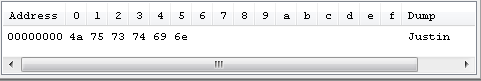
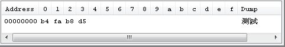

有些檔案，如果你硬是用「記事本」之類的「純文字編輯器」開啟，例如.exe，那麼你會看到一堆「亂碼」，通常你會稱這種檔案叫「二進位檔案」。
其實所有的檔案，都是用二進位方式儲存，並沒有所謂純文字檔案或二進位檔案的區別，即使是所謂純文字檔案，也是用二進位方式儲存，例如你在檔案中輸入Justin，若用可以檢視二進位或16進位的編輯器來觀看，會看到：

J、u、s、t、i、n五個字元分別儲存為二進位的位元組（Byte）值，以16進位值來顯示就是4A、75、73、74、69、6E，如果你對照 ASCII 表，4A、75、73、74、69、6E就是分別是編碼表中的J、u、s、t、i、n五個字元。
所以所謂純文字文件，不過是編輯器讀取檔案的二進位資料，嘗試對照某個編碼之後，再繪製出對應的字元外觀給你看，那麼，你知道若你新增一個所謂「純文字檔案」，那編輯器會預設用哪個編碼來儲存檔案呢？例如方才的J這個字元，編輯器為什麼儲存為4A（1001010）呢？
通常編輯器會使用作業系統預設編碼，舉例來說，在正體中文Windows中預設的編碼為MS950，其中英文字元的編碼相容於ASCII表，所以鍵入英文字元J，才會儲存為4A的位元組，那如果鍵入中文字元呢？例如輸入「測試」，用16進位方式來檢視就會是：

在MS950編碼中，中文字是用兩個位元組來儲存，MS950可視為 Big5 的擴充，如果你查Big5編碼表，會發現B4FA就是「測」字的編碼，B8D5就是「試」字的編碼。
那麼在正體中文Windows中，若文字檔案中同時存在著英文字與中文字，那文字編輯器如何知道哪些位元組是英文字的資料，哪兩個位元組要合在一起顯示中文字元呢？
以Big5為例，為了與ASCII相容，採第一個位元組範圍為0xA4至0xF9，而第二個位元組為0x40到0x7E以及0xA1至0xFE，兩個位元 組組成一個中文字，讀取時若要先讀到位元組是在0xA4至0xF9，就表示它可能是一個中文字的前半，此時再讀入下一個位元組，然 後再依編碼表繪製出中文字，如果先讀到的位元組是在0xA3以內，則直接用該位元組繪製出文字。下面這個簡單的程式，依以上所述規則，對Big5中文字與非中文字作簡單的判斷：
import java.io.*;
public class Main {
public static void main(String[] args) throws Exception {
FileInputStream in = new FileInputStream(args[0]);
byte[] one = new byte[1];
byte[] two = new byte[2];
while(in.read(one) != -1) {
int range = one[0] & 0x00FF;
System.out.printf("%h ", range);
if(range >= 0xA4 && range < 0xF9) {
two[0] = one[0];
in.read(one);
System.out.printf("%h ", one[0] & 0x00FF);
two[1] = one[0];
System.out.println(new String(two));
}
else {
System.out.println(" " + new String(one));
}
}
in.close();
}
}
如果在正體中文Windows下開一個純文字檔案sample.txt，用預設編碼儲存「這T是e個s測t試」的文字，使用十六進位編輯器檢祝會有以下的結果：

使用以上程式會顯示如下結果：
| C:\workspace>java Main sample.txt b3 6f 這 54 T ac 4f 是 65 e ad d3 個 73 s b4 fa 測 74 t b8 d5 試 |
你可以分別對照看看，圖片與執行結果中的十六進位號碼是相符的。